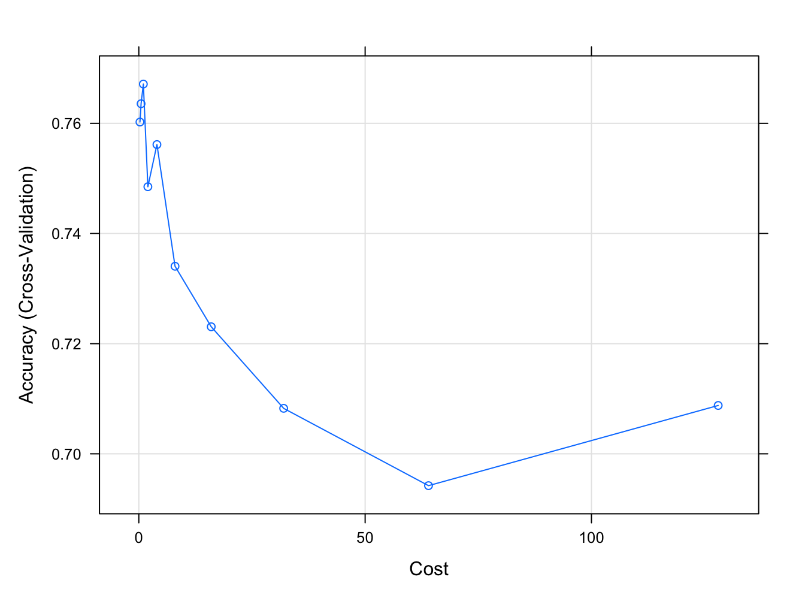

4.11 An application II
Here we show an application using a dataset on whether or not a patient has diabetes, based on certain diagnostic measurements. First load the data and print some observations
library(caret)
library(mlbench)
data("PimaIndiansDiabetes2", package = "mlbench")
PimaIndiansDiabetes2 <- na.omit(PimaIndiansDiabetes2)
knitr::kable(
head(PimaIndiansDiabetes2), booktabs = TRUE,
caption = 'Diabetes data')| pregnant | glucose | pressure | triceps | insulin | mass | pedigree | age | diabetes | |
|---|---|---|---|---|---|---|---|---|---|
| 4 | 1 | 89 | 66 | 23 | 94 | 28.1 | 0.167 | 21 | neg |
| 5 | 0 | 137 | 40 | 35 | 168 | 43.1 | 2.288 | 33 | pos |
| 7 | 3 | 78 | 50 | 32 | 88 | 31.0 | 0.248 | 26 | pos |
| 9 | 2 | 197 | 70 | 45 | 543 | 30.5 | 0.158 | 53 | pos |
| 14 | 1 | 189 | 60 | 23 | 846 | 30.1 | 0.398 | 59 | pos |
| 15 | 5 | 166 | 72 | 19 | 175 | 25.8 | 0.587 | 51 | pos |
Divide the data into a train and a test set.
set.seed(42)
training.samples <- createDataPartition(PimaIndiansDiabetes2$diabetes,
p = 0.7,
list = FALSE)
train.data <- PimaIndiansDiabetes2[training.samples, ]
test.data <- PimaIndiansDiabetes2[-training.samples, ]Then use a SVM, where the parameter is estimated by 10-fold CV. If you have a computer with multiple cores, there may be a speed-up by using the library doMC.
model <- train(
diabetes ~., data = train.data, method = "svmRadial",
trControl = trainControl("cv", number = 10),
tuneLength = 10,
preProcess = c("center","scale")
)We may print a summary of the training of the model
## Support Vector Machines with Radial Basis Function Kernel
##
## 275 samples
## 8 predictor
## 2 classes: 'neg', 'pos'
##
## Pre-processing: centered (8), scaled (8)
## Resampling: Cross-Validated (10 fold)
## Summary of sample sizes: 248, 247, 248, 248, 247, 246, ...
## Resampling results across tuning parameters:
##
## C Accuracy Kappa
## 0.25 0.7602354 0.4003850
## 0.50 0.7635605 0.4129658
## 1.00 0.7671319 0.4258676
## 2.00 0.7484902 0.3867206
## 4.00 0.7561440 0.4115484
## 8.00 0.7340540 0.3687010
## 16.00 0.7230660 0.3528600
## 32.00 0.7082604 0.3172943
## 64.00 0.6942209 0.3047575
## 128.00 0.7087803 0.3466723
##
## Tuning parameter 'sigma' was held constant at a value of 0.114713
## Accuracy was used to select the optimal model using the largest value.
## The final values used for the model were sigma = 0.114713 and C = 1.We can also plot the cross-validated accuracy as a function of the regularization parameter

Figure 4.24: Cross-validated accuracy against the regularization parameter for the SVM
The final results are
## [1] 0.7606838